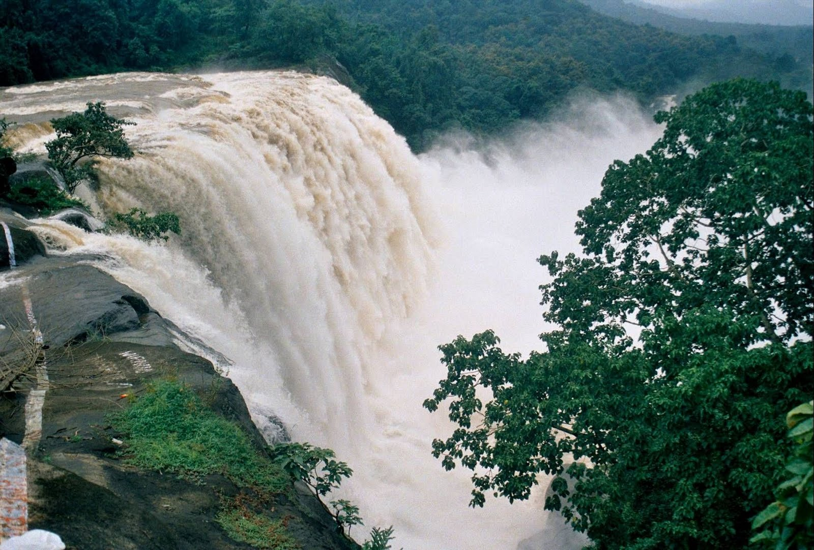

NAME: kerala tourism

Kerala, a state situated on the tropical Malabar Coast of southwestern India, is one of the most popular tourist destinations in the country. Named as one of the ten paradises of the world by National Geographic Traveler,[1] Kerala is famous especially for its ecotourism initiatives and beautiful backwaters.[2] Its unique culture and traditions, coupled with its varied demography, have made Kerala one of the most popular tourist destinations in the world. Growing at a rate of 13.31%, the tourism industry is a major contributor to the state's economy

HOW TO REACH ?
Nearest Airport: kerala
Nearest Railway Station: kerala
Nearest Bus Stand: kerala